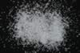

|
|
(For further information on spectroscopy, see:
http://speclab.cr.usgs.gov)
TITLE: Corundum HS283 DESCRIPT
DOCUMENTATION_FORMAT: MINERAL
SAMPLE_ID: HS283
MINERAL_TYPE: Oxide
MINERAL: Corundum (Hematite group)
FORMULA: Al2O3
FORMULA_HTML: Al2O3
COLLECTION_LOCALITY: Transvaal
ORIGINAL_DONOR: Hunt and Salisbury Collection
CURRENT_SAMPLE_LOCATION: USGS Denver Spectroscopy Laboratory
ULTIMATE_SAMPLE_LOCATION: USGS Denver Spectroscopy Laboratory
SAMPLE_DESCRIPTION:
This sample was prepared from crystals that were brownish near the surface and blueish-green near in the interior.
Hunt, G.R., J.W. Salisbury, C.J. Lenhoff, 1971, Visible and Near-Infrared spectra of Minerals and Rocks: III. Oxides and Hydroxides. Mod. Geol. 2, pp 195-205.
IMAGE_OF_SAMPLE:

END_SAMPLE_DESCRIPTION.
XRD_ANALYSIS:
40 kV - 30 mA, 6.5-9.5 keV additional phase
File: corun283.out, -.mdi
References: Huebner's reference patterns; JCPDS #5-355
Found: corundum, minor diaspore
Comment: Very sharp corundum reflections suggest excellent crystallinity and
compositional homogeneity.
END_XRD_ANALYSIS.
COMPOSITIONAL_ANALYSIS_TYPE: None # XRF, EM(WDS), ICP(Trace), WChem
COMPOSITION_TRACE: None
COMPOSITION_DISCUSSION:
Analysis showed the sample to contain 0.01% Cr; 0.5% Fe; and 0.2% Si, with traces of Ti, V, Mn, Mg, Ca, and Cu. The iron appears to be present on both the ferrous (0.55, 0.45, and 1.1µm absorption features) and ferric (0.7, 0.45, and near 0.4 µm) forms. The Cr3+ ion contributes to the 0.4, 0.55 and 0.7 µm (emission) features.
Hunt, G.R., J.W. Salisbury, C.J. Lenhoff, 1971, Visible and Near-Infrared spectra of Minerals and Rocks: III. Oxides and Hydroxides. Mod. Geol. 2, pp 195-205.
END_COMPOSITION_DISCUSSION.
MICROSCOPIC_EXAMINATION:
No cleavage, good parting, uniaxial (-), high relief. All consistent with corrundum. G. Swayze.
END_MICROSCOPIC_EXAMINATION.
SPECTROSCOPIC_DISCUSSION:
END_SPECTROSCOPIC_DISCUSSION.
SPECTRAL_PURITY: 1c2_3_4_ # 1= 0.2-3, 2= 1.5-6, 3= 6-25, 4= 20-150 microns
| LIB_SPECTRA_HED: | where | Wave Range | Av_Rs_Pwr | Comment |
|---|---|---|---|---|
| LIB_SPECTRA: | splib04a r 1282 | 0.2-3.0µm | 200 | g.s.= 245 µm |
| LIB_SPECTRA: | splib05a r 2249 | 0.2-3.0µm | 200 | g.s.= |
| LIB_SPECTRA: | splib06a r 6463 | g.s.= |
{kind=link}